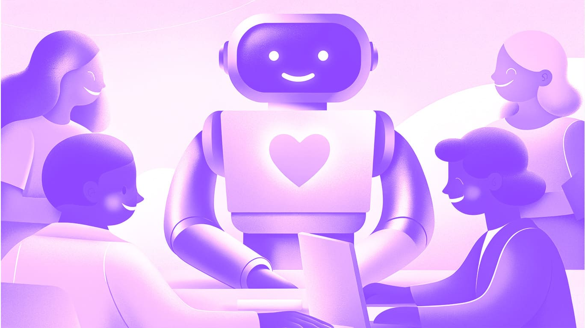
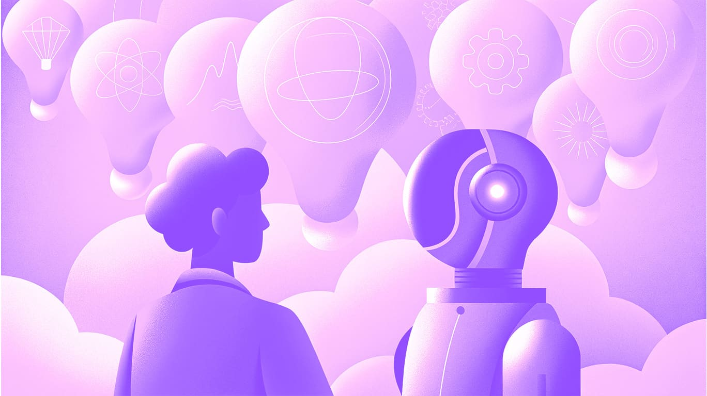

Шпаргалка
Привет👋 Ты наверняка уже слышал, что нейросети могут всё: от генерации картинок до написания продающих текстов. Но как это применить в реальной работе, чтобы не тратить часы на рутину? Давай разберём, где и как именно искусственный интеллект может стать союзником дизайнера на фрилансе.
Тексты без мучений: от презентаций до постов
Не всех вдохновляет написание текстов, например для постов в соцсетях, презентаций или кейсов в портфолио. Вот здесь и приходит на помощь ИИ. Пишешь своими словами то, что хочешь донести, и нейросеть оформит твои мысли в аккуратный текст. Остаётся только чуть-чуть подредактировать — и можно использовать. Лично я люблю генерировать десятки вариантов заголовков, а потом выбирать самый удачный. Это экономит время и помогает выйти за рамки привычных шаблонов.
Какие нейросети использовать:
- ChatGPT — мощнейшая нейросеть, задающая планку всем остальным, но есть сложности с доступом из России.
- DeepSeek – отличный аналог без ограничений с удобным приложением, но данные до 2023 года.
- Qwen — быстро развивающаяся модель, есть поиск в интернете, голосовой и видеочат, простенькая генерация фото и видео.

Фотограф и иллюстратор, который всегда под рукой
Когда важна скорость и концептуальность, нет смысла часами искать идеальное стоковое фото. Вместо этого опиши, что тебе нужно, и ИИ сгенерирует подходящую картинку за секунды.
Можно использовать такие изображения в прототипах, а потом доработать их в редакторе. А когда клиент утвердит концепцию — заменить на стоковые фото, провести фотосессию или заказать авторские иллюстрации.
Мои любимые генеративные ИИ:
- Recraft — отличная нейросеть, можно создавать и сохранять собственный стиль генераций, дорабатывать участки изображений, есть достаточное количество токенов в день. Использую с VPN и создаю обложки для статей)
- Krea.AI — собственный стиль можно загрузить только в платной версии, но есть множество интересных пресетов. Отличное качество и высокое понимание промтов.
- Ideogram — помогает мне генерировать фото для мокапов, также создает интересные лого и плакаты для вдохновения.

Да, авторские работы круче, но когда время жмет — нейросети спасают!
Генерация видео: когда хочется добавить движения
Движение всегда цепляет внимание, но что делать, если ты не умеешь монтировать или просто не хочешь тратить на это силы? С помощью ИИ можно оживить картинку или создать видео с нуля.
Сейчас качество таких роликов пока не идеальное, но при грамотном использовании получается интересно и даже эффектно.
Что нам доступно бесплатно:
- Krea.AI — кроме изображений умеет генерировать и видео. Удобно, что можно выставить первый и последний кадр. Доступно высокое качество и экспорт без вотермарки.
- Runway — 125 токенов на аккаунт, хватает на 3-4 видео. Можно настраивать движение камеры. Экспорт с вотермаркой.
- Liquid.paper.design — бесплатная анимация лого с металлическим эффектом как у apple. Скачать нельзя, но можно записать экран.
- Logoai — простенькие пресеты для анимации лого, в некоторых случаях может пригодиться.
Аудио для проектов: голоса и музыка без лицензий
Признаюсь, сама почти не использую такие нейронки, но кому-то они могут облегчить жизнь.
Что и для чего:
- Auphonic — модель способна убирать посторонние звуки, шумы, молчание и «эканье». Бесплатно можно обработать до 2 часов материала.
- Eleven Labs Scribe — отлично переводит аудио в текст, доступно множество языков, хорошо расставляет знаки препинания отталкиваясь от интонации.
- Suno — на сегодня лучшая нейросеть для генерации музыки, может пригодиться при создании анимаций и видео.

Полезные AI-инструменты для повседневных задач
С каждым днём появляется всё больше и больше нейросетей-утилит, которые решают практические задачи за считанные секунды. Они сильно экономят время, позволяя сосредоточиться на главном — смысле, идее и творчестве.
Например:
- Вырезание изображений – Background remover, Figma AI, Photoroom и многие другие.
- Улучшение качества фото – Topaz gigapixel, Picsart enhancer, легко найти и другие варианты.
- Избавиться от вотермарки – Dewatermark, когда нужно примерить изображение в макет или креатив.
- Проверка текста – Нейро редактор, QuillBot.
Главное — не бояться пробовать
Фриланс — это всегда про баланс между творчеством и продуктивностью. ИИ не заменит тебя как автора, но поможет работать быстрее, аккуратнее и спокойнее. А значит — меньше стресса, больше креатива и времени на отдых.
Не обязательно осваивать всё сразу. Просто помни: во время работы может найтись ИИ-инструмент, который упростит задачу. Находи те, что удобны лично тебе, и держи их под рукой.
Проверим, чем полезны нейронки?
Пройти тест
04.05.2025